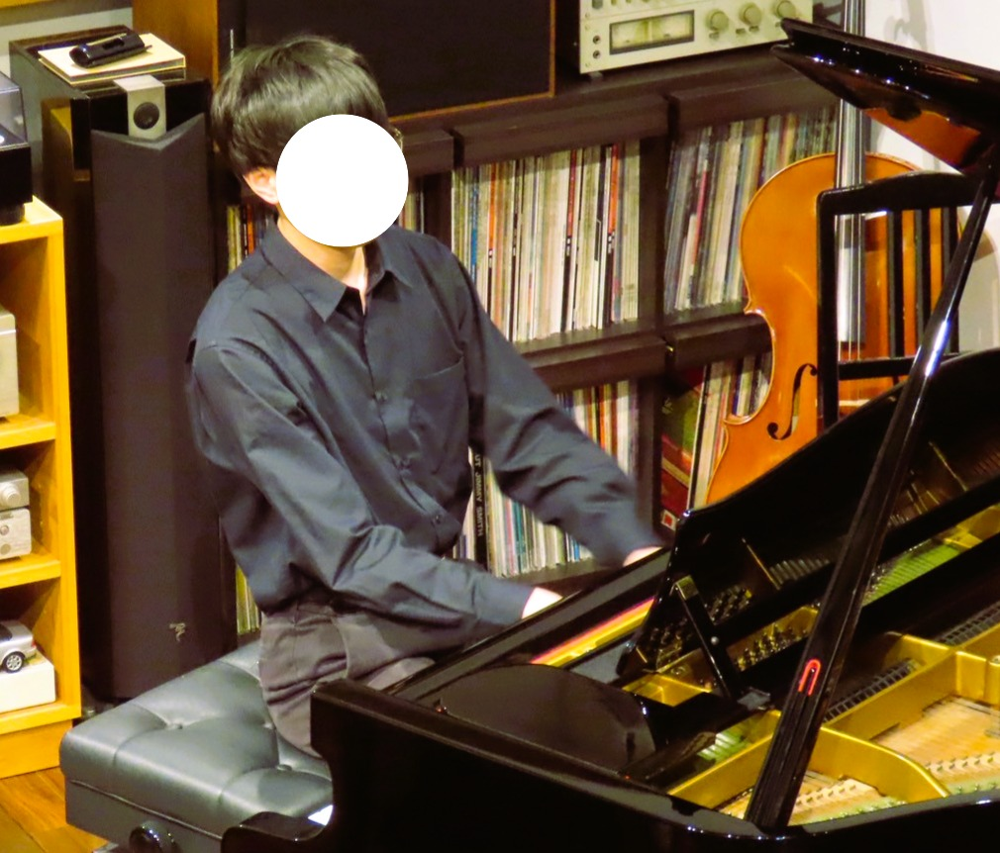

当サイトについて
このサイトは東方と音楽にのめりこんだある大学院生が、サークル内で作成した資料や、自らの知見の備忘録として様々な資料を公開するものです。
また、私の友人（自称インフルエンサー）である電位測定氏が制作したピアノアレンジもここに掲載しています。いずれもピアノ中級者の電位測定本人が演奏会で演奏するために制作したものですので、
難易度は比較的平易だと思います（私も弾いたことがありますが、ショパンのノクターンを弾けるのであれば本当に易しいです）。
拙いサイトではありますが、ゆっくりしていってください。
管理人プロフィール

| 名前 | (ここでは)秘密 | |
|---|---|---|
| 年齢 | 20代中盤 | |
| 性別 | 男 | |
| 出身 | 北海道北部（道北） |
略歴
| 2020/3 | 北海道旭川某高校卒業 | |
|---|---|---|
| 2020/4 | 金沢大学理工学域物質化学類入学 | |
| 2024/3 | 同卒業 (学士(工学)) | |
| 2024/4 | 同大学院自然科学研究科物質化学専攻 博士前期課程入学 | |
| 2026/3 | 同修了 (修士(工学)) | |
| 2026/4 | 同博士後期課程入学 |